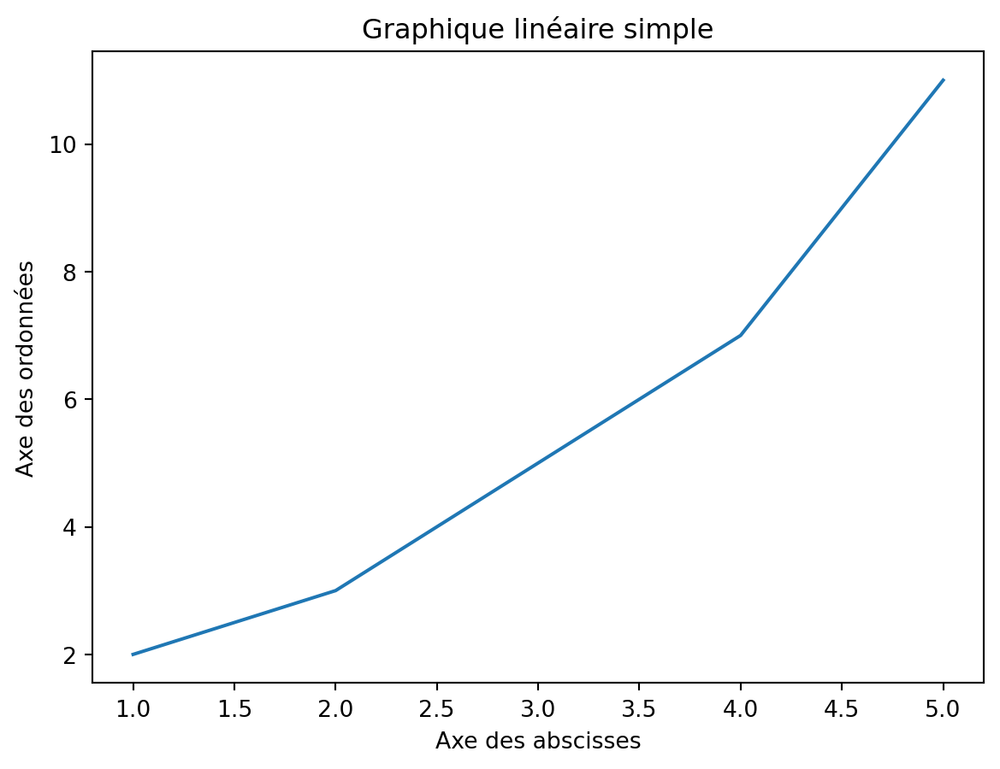
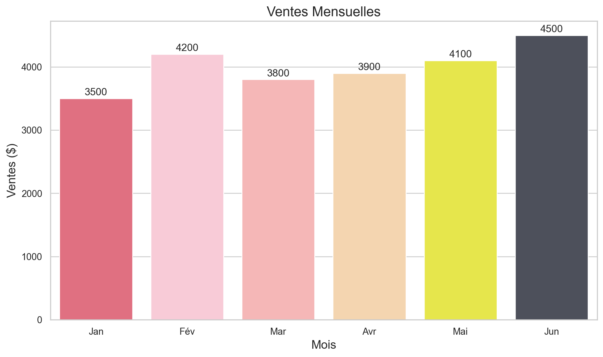

Pour la data visualisation en Python, il est essentiel de maîtriser deux bibliothèques : Numpy et Pandas
NumPy
NumPy est une bibliothèque Python qui offre un support pour travailler avec des tableaux multidimensionnels (appelés ndarray) et des fonctions mathématiques pour manipuler ces tableaux. Voici quelques-unes de ses principales caractéristiques :
Tableaux multidimensionnels : NumPy offre une structure de données appelée ndarray, qui permet de stocker des tableaux multidimensionnels de manière efficace. Les tableaux NumPy sont homogènes et peuvent contenir des éléments de même type.
Calculs mathématiques : NumPy propose un large éventail de fonctions mathématiques pour effectuer des opérations sur les tableaux, telles que les opérations arithmétiques, les opérations de statistiques, les opérations de transformation, etc.
Indexation et tranchage : NumPy offre des fonctionnalités puissantes pour l’indexation et le tranchage des tableaux, ce qui permet d’accéder et de manipuler facilement des sous-ensembles de données.
Pandas
Pandas est une bibliothèque Python qui offre des structures de données et des fonctions pour la manipulation et l’analyse des données tabulaires. Voici quelques-unes de ses principales caractéristiques :
DataFrame : Le DataFrame est la structure de données principale de Pandas, qui permet de stocker et de manipuler des données tabulaires à deux dimensions, similaires à une feuille de calcul Excel ou une table de base de données.
Séries : Pandas propose également une structure de données appelée Series, qui est une structure unidimensionnelle similaire à un tableau unidimensionnel ou à une colonne d’un DataFrame.
Indexation flexible : Pandas offre des fonctionnalités d’indexation flexibles qui permettent d’accéder et de manipuler les données de manière intuitive, y compris l’indexation par des étiquettes, des positions, des conditions booléennes, etc.
Fonctionnalités d’analyse des données : Pandas propose un large éventail de fonctionnalités pour l’analyse des données, y compris le regroupement, l’agrégation, la fusion, le tri, le filtrage, le nettoyage des données manquantes, etc.
Pourquoi la data visualisation avec Python ?
La data visualisation avec Python est très appréciée pour plusieurs raisons :
Richesse des bibliothèques : Python dispose de plusieurs bibliothèques dédiées à la visualisation des données telles que Matplotlib, Seaborn, et Plotly. Ces bibliothèques offrent une grande variété de graphiques et de styles pour répondre à divers besoins de visualisation.
Facilité d’utilisation : Python est réputé pour sa syntaxe simple et sa facilité d’apprentissage. Les bibliothèques de visualisation de données en Python sont conçues pour être conviviales et offrir une expérience de développement fluide, ce qui facilite la création de graphiques et de visualisations complexes.
Intégration avec les autres outils de data science : Python est largement utilisé dans le domaine de la science des données et de l’intelligence artificielle. La data visualisation en Python s’intègre parfaitement avec d’autres outils et bibliothèques couramment utilisés dans ces domaines, ce qui facilite l’analyse et la présentation des données.
En résumé, la data visualisation avec Python est appréciée pour sa facilité d’utilisation, sa flexibilité, sa richesse en bibliothèques, et son intégration harmonieuse avec les autres outils de data science, ce qui en fait un choix populaire parmi les professionnels et les chercheurs dans le domaine de l’analyse de données.
Les différentes bibliothèques
Pour ce cours, nous aurons besoin de trois bibliothèques :
Matplotlib
Seaborn
Plotly
Pour installer les bibliothèques :
Ouvrez une fenêtre de terminal.
Tapez la commande suivant ce que vous voulez installer et appuiez sur Entrée :
Pour installer Matplotlib :pip install matplotlib
Pour installer Seaborn :pip install seaborn
Pour installer Plotly :pip install plotly
Qu’est-ce que Matplotlib ?
Matplotlib est une bibliothèque de visualisation de données en Python, largement utilisée pour créer des graphiques statiques, des diagrammes et des visualisations à partir de données numériques. Il offre une grande flexibilité et une variété de styles de graphiques pour représenter efficacement différentes structures de données.
Créer des graphiques avec Matplotlib
Graphique linéaire
Un graphique linéaire est utilisé pour représenter graphiquement la relation entre deux variables continues.
import matplotlib.pyplot as plt # Importe la bibliothèque de visualisation Matplotlib# Données pour l'axe des abscisses (x) et des ordonnées (y)x = [1, 2, 3, 4, 5] # Valeurs de l'axe des abscissesy = [2, 3, 5, 7, 11] # Valeurs de l'axe des ordonnées correspondantes# Création du graphique linéaireplt.plot(x, y) # Trace un graphique linéaire avec les données fournies# Ajout de titre et d'étiquettes d'axeplt.title('Graphique linéaire simple') # Ajoute un titre au graphiqueplt.xlabel('Axe des abscisses') # Définit le label de l'axe des abscissesplt.ylabel('Axe des ordonnées') # Définit le label de l'axe des ordonnées# Affichage du graphiqueplt.show() # Affiche le graphique à l'écran

Histogramme
Un histogramme est un type de graphique utilisé pour représenter la distribution des valeurs d’une variable continue ou discrète.
import matplotlib.pyplot as plt # Importe la bibliothèque pour la visualisationimport numpy as np # Importe la bibliothèque pour les opérations numériques# Génération de données aléatoires suivant une distribution normale# Initialise le générateur de nombres aléatoires pour la reproductibiliténp.random.seed(0)# Génère 1000 points de données avec une distribution normale standarddata = np.random.randn(1000)# Création de l'histogramme# Trace un histogramme avec 30 intervalles (bins), coloré en orange avec des bords noirsplt.hist(data, bins=30, color='orange', edgecolor='black')# Ajout de titre et d'étiquettes d'axeplt.title('Exemple d\'histogramme') # Ajoute un titre au graphiqueplt.xlabel('Valeurs') # Ajoute une étiquette à l'axe des abscissesplt.ylabel('Fréquence') # Ajoute une étiquette à l'axe des ordonnées# Affichage de l'histogrammeplt.show() # Montre le graphique à l'écran
Diagramme à barre
Un diagramme à barres est un type de graphique utilisé pour représenter graphiquement des données catégorielles, où chaque catégorie est représentée par une barre dont la longueur correspond à la valeur associée à cette catégorie.
import matplotlib.pyplot as plt # Importe la bibliothèque de visualisation graphique# Donnéesproduits = ['Produit A', 'Produit B', 'Produit C', 'Produit D'] # Noms des produitsventes = [350, 480, 300, 600] # Ventes mensuelles de chaque produit# Création du diagramme à barres# Crée des barres roses avec bordure noire pour représenter les ventesplt.bar(produits, ventes, color='pink', edgecolor='black')# Ajout de titre et d'étiquettes d'axe# Définit le titre du graphiqueplt.title('Comparaison des ventes mensuelles par produit')plt.xlabel('Produits') # Ajoute une étiquette à l'axe des abscissesplt.ylabel('Ventes mensuelles') # Ajoute une étiquette à l'axe des ordonnées# Affichage du diagramme à barresplt.show()
Scatterplot
Un scatterplot, ou nuage de points en français, est un type de graphique utilisé pour représenter graphiquement la relation entre deux variables continues.
import matplotlib.pyplot as plt # Importe la bibliothèque de visualisation graphique Matplotlibimport numpy as np # Importe la bibliothèque pour les calculs numériques NumPy# Génération de données aléatoires# Fixe la graine du générateur de nombres aléatoires pour la reproductibiliténp.random.seed(0)# Génère 100 valeurs normalement distribuées pour xx = np.random.randn(100) # Génère 100 valeurs normalement distribuées pour x# Crée y à partir de x en ajoutant une relation linéaire et du bruit aléatoirey =2* x + np.random.randn(100)# Création du scatterplot# Trace un graphique de dispersion des points x et y avec une transparence de 0.7plt.scatter(x, y, color='green', alpha=0.7)# Ajout de titre et d'étiquettes d'axeplt.title('Exemple de scatterplot') # Ajoute un titre au graphiqueplt.xlabel('Variable X') # Définit l'étiquette de l'axe des abscissesplt.ylabel('Variable Y') # Définit l'étiquette de l'axe des ordonnées# Affichage du scatterplotplt.show() # Montre le graphique à l'écran
Pieplot
Un pieplot, ça sert pas à grand chose, c’est illisible et moche
import matplotlib.pyplot as plt # Importe la bibliothèque de visualisation graphique Matplotlib# Donnéeslabels = ['Non', 'Non en rouge'] # Étiquettes pour chaque segment du pie plotsizes = [80, 20] # Pourcentage représentant la taille de chaque segment# Création du pie plotplt.figure(figsize=(8, 6)) # Définit la taille de la figure pour le pie plot# Crée le pie plot avec les pourcentages affichés et les couleurs spécifiéesplt.pie(sizes, labels=labels, autopct='%1.1f%%', colors=['blue', 'red'])# Ajout de titreplt.title('Faut-il faire des camenberts ?') # Ajoute un titre au pie plot# Affichage du pie plotplt.show() # Affiche le graphique
Personnaliser des graphiques
Voici quelques-unes des façons de personnaliser un graphique avec Matplotlib :
Couleur et style : Tu peux spécifier la couleur et le style utilisés dans un graphique à l’aide des arguments color et linestyle (ou marker) dans les fonctions de traçage.
# Importe la bibliothèque de visualisation graphique Matplotlibimport matplotlib.pyplot as plt# Données pour le graphique# Données de l'axe des abscisses (par exemple, âges)x = [25, 30, 35, 40, 45]# Données de l'axe des ordonnées (par exemple, salaires)y = [50000, 60000, 70000, 80000, 90000]# Noms associés à chaque paire de donnéesnoms = ["Alice", "Bob", "Charlie", "David", "Emma"]# Couleurs spécifiées pour chaque barre, mappées par nomcouleurs = {'Alice': '#EB9C64', 'Bob': '#FF8789', 'Charlie': '#8FBF9F', 'David': '#346145', 'Emma': '#554E4F'}# Tracer le graphique en barresfor i inrange(len(x)):# Crée une barre pour chaque entrée, avec une couleur et une étiquette spécifique plt.bar(x[i], y[i], color=couleurs[noms[i]], label=noms[i])# Ajout de légendes au graphiqueplt.legend() # Affiche une légende pour identifier les barres par le nom# Configuration des axes et titreplt.xlabel('Age') # Ajoute une étiquette à l'axe des abscissesplt.ylabel('Salaire') # Ajoute une étiquette à l'axe des ordonnéesplt.title('Salaire par Age et Personne') # Ajoute un titre au graphique# Affichage du graphiqueplt.show() # Montre le graphique à l'écran
Titre et étiquettes d’axe : Tu peux ajouter un titre à ton graphique à l’aide de la fonction plt.title(). De même, tu peux ajouter des étiquettes à l’axe des abscisses et à l’axe des ordonnées avec plt.xlabel() et plt.ylabel() respectivement.
# Tracer le graphiquefor i inrange(len(x)):# Trace une barre pour chaque élément avec couleur et étiquette correspondantes plt.bar(x[i], y[i], color=couleurs[noms[i]], label=noms[i])# Ajouter une légende pour identifier chaque barre par son nomplt.legend()# Ajouter un titre et des étiquettes d'axe pour clarifier les données présentéesplt.title("Salaire en fonction de l'âge") # Titre du graphiqueplt.xlabel("Âge (ans)") # Étiquette de l'axe des abscissesplt.ylabel("Salaire (€)") # Étiquette de l'axe des ordonnées# Afficher le graphique à l'écranplt.show()
Légendes : Si ton graphique comporte plusieurs séries de données, tu peux ajouter une légende pour les distinguer à l’aide de la fonction plt.legend(). Tu peux spécifier les noms des séries de données dans la légende en utilisant l’argument label dans les fonctions de traçage.
# Tracer le graphiquefor i inrange(len(x)): plt.bar(x[i], y[i], color=couleurs[noms[i]], label=noms[i])# Ajouter une légendeplt.legend()# Afficher le graphiqueplt.show()
Qu’est-ce que Seaborn ?
Seaborn est une bibliothèque de visualisation de données en Python, construite sur Matplotlib, qui offre des fonctionnalités supplémentaires et une syntaxe plus conviviale pour créer des graphiques statistiques attrayants.
Créer des graphiques avec Seaborn
Graphique statistique
Les graphiques statistiques sont des outils essentiels pour explorer, analyser, communiquer et prendre des décisions basées sur les données.
# Importe Seaborn pour la visualisation statistique avancéeimport seaborn as sns# Importe Matplotlib pour les personnalisations graphiquesimport matplotlib.pyplot as plt# Importe NumPy pour la manipulation numériqueimport numpy as np# Génération de données aléatoires# Fixe la graine du générateur de nombres aléatoires pour la reproductibiliténp.random.seed(0)# Génère 100 valeurs aléatoires suivant une distribution normaledata = np.random.randn(100)# Création du graphique de densité avec Seaborn# Trace un histogramme avec estimation de densité, coloré en bleusns.histplot(data, kde=True, color='blue')# Ajout de titre et d'étiquettes d'axeplt.title('Graphique de densité avec Seaborn') # Ajoute un titre au graphiqueplt.xlabel('Valeurs') # Définit l'étiquette pour l'axe des abscissesplt.ylabel('Densité') # Définit l'étiquette pour l'axe des ordonnées# Affichage du graphiqueplt.show() # Affiche le graphique à l'écran
Heatmap
Une heatmap, ou carte de chaleur en français, est un type de graphique qui utilise des couleurs pour représenter des données tabulaires sous forme de matrice. Les heatmaps sont particulièrement utiles pour visualiser les relations et les tendances dans les données, en mettant en évidence les valeurs élevées et faibles à travers différentes nuances de couleur.
# Importe Seaborn pour des visualisations statistiques avancéesimport seaborn as sns# Importe Matplotlib pour la personnalisation de graphiquesimport matplotlib.pyplot as plt# Importe NumPy pour la manipulation de données numériquesimport numpy as np# Génération de données aléatoires pour la heatmap# Initialise le générateur de nombres aléatoires pour la reproductibiliténp.random.seed(0)# Crée une matrice 10x10 de nombres aléatoires entre 0 et 1data = np.random.rand(10, 10)# Création de la heatmap avec Seaborn# Utilise la fonction heatmap de Seaborn pour visualiser la matrice de donnéessns.heatmap(data) plt.title('Exemple de Heatmap') # Ajoute un titre au graphique# Affichage de la heatmapplt.show() # Affiche la carte de chaleur à l'écran
Personnaliser des graphiques
Personnaliser des graphiques avec Seaborn offre plusieurs avantages et permet d’ajouter des détails visuels pour mieux communiquer les résultats de manière efficace.
Voici quelques raisons pour lesquelles la personnalisation des graphiques avec Seaborn est utile :
Améliorer l’esthétique : Seaborn propose des palettes de couleurs esthétiques et des styles de graphiques prédéfinis qui améliorent l’apparence des graphiques. En personnalisant les couleurs, les styles de lignes, les marqueurs et les polices, les graphiques deviennent plus attrayants visuellement.
Faciliter la lecture : En ajustant les étiquettes d’axe, les titres, les légendes et les annotations, il est possible de rendre les graphiques plus clairs et plus faciles à lire. Une bonne personnalisation permet de mettre en évidence les points clés et de guider le regard du lecteur vers les informations importantes.
Adapter le graphique au public cible : La personnalisation permet d’adapter le graphique au public cible en choisissant des couleurs, des styles et des annotations appropriés. Par exemple, un graphique destiné à un public professionnel peut avoir une apparence plus formelle, tandis qu’un graphique destiné à un public plus jeune peut être plus ludique et coloré.
Exemple de personnalisation
import seaborn as snsimport matplotlib.pyplot as plt# Charger le jeu de données (fictif)mois = ['Jan', 'Fév', 'Mar', 'Avr', 'Mai', 'Jun']ventes = [3500, 4200, 3800, 3900, 4100, 4500]# Créer un graphique avec Seabornsns.set(style="whitegrid") # Choisir un style de fond# Définir une palette de couleurs personnaliséecouleurs = ["#F35D74", "#FFC3D4", "#FFADAD", "#FFD6A5", "#FFFF33", "#4B4F5D"]# Personnaliser le graphique# Définir la taille du graphiqueplt.figure(figsize=(10, 6)) # Utiliser la palette de couleurs personnalisée sns.barplot(x=mois, y=ventes, palette=couleurs)# Ajouter un titreplt.title('Ventes Mensuelles', fontsize=16)# Ajouter une étiquette pour l'axe xplt.xlabel('Mois', fontsize=14)# Ajouter une étiquette pour l'axe yplt.ylabel('Ventes ($)', fontsize=14) # Ajouter des annotationsfor i, vente inenumerate(ventes): plt.text(i, vente +50, str(vente), ha='center', fontsize=12)# Afficher le graphique# Ajuster la disposition pour éviter la superposition des élémentsplt.tight_layout()plt.show()
/var/folders/84/s_3zy4bx3sl62y09kp8987c00000gn/T/ipykernel_13695/2347997844.py:20: FutureWarning:
Passing `palette` without assigning `hue` is deprecated and will be removed in v0.14.0. Assign the `x` variable to `hue` and set `legend=False` for the same effect.

Qu’est-ce que Plotly ?
Plotly est une bibliothèque de visualisation de données en Python qui permet de créer des graphiques interactifs et dynamiques.
Créer des graphiques avec plotly
Scatterplot interactif
Un scatterplot interactif est un type de graphique où les points de données sont affichés sur un plan cartésien et où l’utilisateur peut interagir avec le graphique pour explorer les données de manière dynamique.
# Importe Plotly Express pour la visualisation interactiveimport plotly.express as px# Importe pandas pour la manipulation de donnéesimport pandas as pd# Importe numpy pour les opérations numériquesimport numpy as np# Création de données aléatoires# Fixe la graine du générateur de nombres aléatoires pour la reproductibiliténp.random.seed(0)data = {# 100 valeurs aléatoires normalement distribuées pour l'axe X'X': np.random.randn(100), # 100 valeurs aléatoires normalement distribuées pour l'axe Y'Y': np.random.randn(100), # 100 valeurs aléatoires pour la taille des marqueurs'Z': np.random.rand(100) *100, # 100 valeurs aléatoires pour la couleur des marqueurs'Color': np.random.rand(100) *100}df = pd.DataFrame(data) # Convertit le dictionnaire en DataFrame pandas# Création du scatterplot interactif avec Plotly Expressfig = px.scatter(df, x='X', y='Y', size='Z', color='Color', hover_name=df.index)# 'x' et 'y' définissent les axes, 'size' et 'color' ajustent la taille et la couleur # des marqueurs, 'hover_name' ajoute des étiquettes interactives# Personnalisation du titre et des axesfig.update_layout( title='Scatterplot interactif avec Plotly', # Définit le titre du graphique xaxis_title='Axe X', # Nomme l'axe X yaxis_title='Axe Y'# Nomme l'axe Y)# Affichage du scatterplot interactiffig.show() # Montre le graphique dans un navigateur web ou une interface Jupyter
Diagramme à barre interactif
les diagrammes à barres interactifs avec Plotly sont des outils puissants pour explorer, analyser et communiquer les données de manière dynamique.
# Importe Plotly Express pour des visualisations interactivesimport plotly.express as px# Importe pandas pour la gestion des donnéesimport pandas as pd# Création de données fictivesdata = {'Catégorie': ['A', 'B', 'C', 'D'], # Catégories du diagramme'Valeur': [30, 50, 40, 60] # Valeurs associées à chaque catégorie}# Convertit le dictionnaire en DataFrame pour faciliter l'utilisation avec Plotlydf = pd.DataFrame(data)# Création du diagramme à barres interactif avec Plotly Expressfig = px.bar(df, x='Catégorie', y='Valeur', title='Diagramme à barres interactif avec Plotly')# 'x' spécifie la colonne pour l'axe des abscisses, 'y' pour l'axe des ordonnées, # 'title' ajoute un titre au graphique# Affichage du diagramme à barres interactiffig.show() # Montre le diagramme dans un navigateur web ou une interface Jupyter
Graphique en surface 3D
Les graphiques en surface 3D, également connus sous le nom de graphiques en relief ou graphiques en trois dimensions, sont utilisés pour représenter des fonctions ou des ensembles de données tridimensionnels.
# Importe Plotly Graph Objects pour des visualisations complexesimport plotly.graph_objects as go# Importe pandas pour la manipulation des donnéesimport pandas as pd# Chargement des donnéesdata_url='https://raw.githubusercontent.com/plotly/datasets/master/api_docs/mt_bruno_elevation.csv'# Télécharge et charge les données d'élévation du Mont Bruno depuis une URL en lignedf = pd.read_csv(data_url)# Création du graphique en surface 3D avec Plotlyfig = go.Figure(data=[go.Surface(z=df.values)])# Crée un objet figure avec un graphique en surface 3D# 'z=df.values' définit les valeurs de l'élévation comme axe z du graphique en surface# Personnalisation du titre et des axesfig.update_layout( title='Elevation du Mont Bruno en 3D', # Définit le titre du graphique scene=dict( xaxis_title='Longitude', # Nomme l'axe x comme 'Longitude' yaxis_title='Latitude', # Nomme l'axe y comme 'Latitude' zaxis_title='Altitude'# Nomme l'axe z comme 'Altitude' ))# Affichage du graphique en surface 3D# Affiche le graphique, généralement dans un navigateur web ou une interface Jupyterfig.show()
Maintenant que vous savez créer des graphiques avec Python, passons aux exercices !